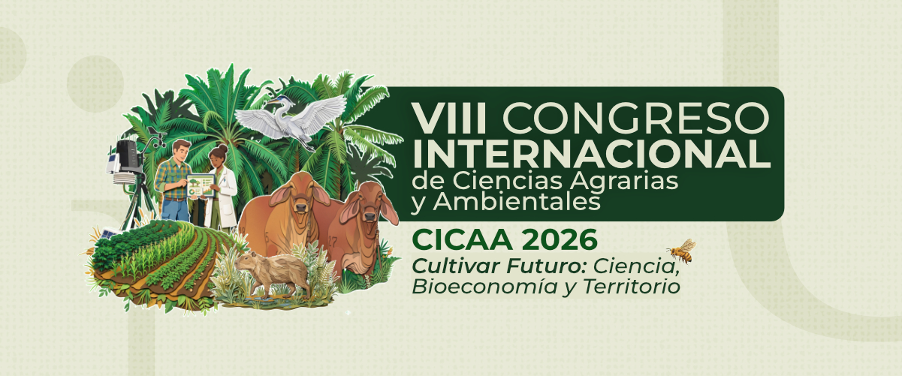
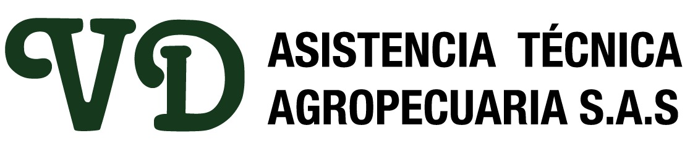
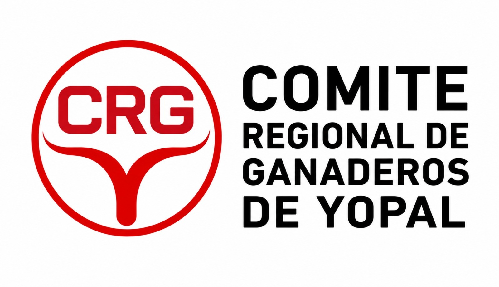
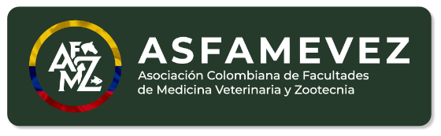
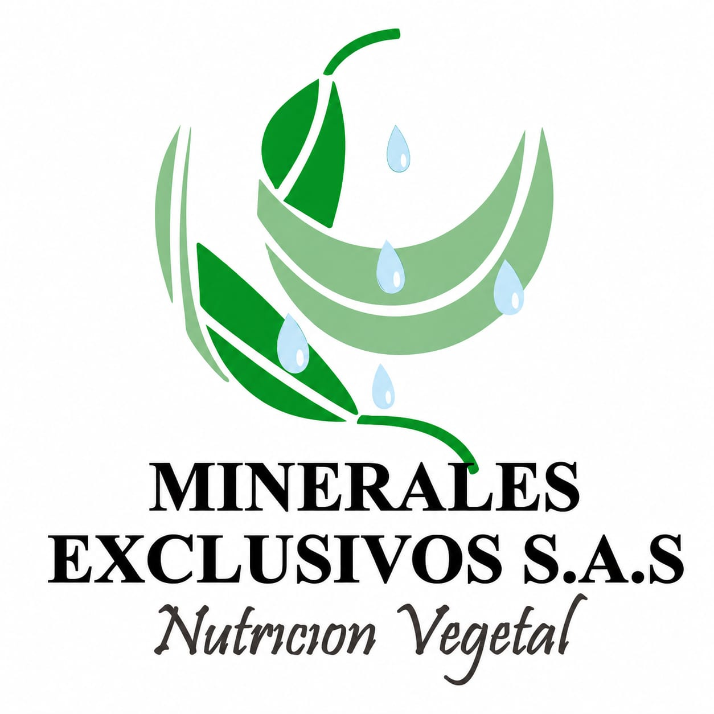
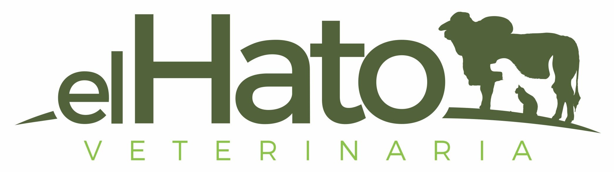

VIII Congreso Internacional de Ciencias Agrarias y Ambientales
CICAA 2026 - Agenda Académica

¿Qué es el CICAA 2026?
El VIII Congreso Internacional de Ciencias Agrarias y Ambientales (CICAA 2026) es un espacio académico de encuentro entre investigadores, docentes, estudiantes y productores del sector agropecuario y ambiental, orientado a compartir resultados de investigación, experiencias de innovación territorial y estrategias de sostenibilidad aplicadas al campo colombiano y latinoamericano.
E1 Sala 1
Ciencia e innovación para sistemas agroambientales sostenibles.
E2 Sala 2
Bioeconomía, innovación y transformación de las cadenas agroproductivas.
E3 Sala 3
Territorio, gobernanza y sostenibilidad socioambiental.
Sede del Evento
Centro de Convenciones y Negocios de la Cámara de Comercio de Casanare
Carrera 29 # 14 - 47, Yopal, Casanare.
Listado de Pósteres
Conozca los trabajos de investigación exhibidos.
| Código | Título del Póster |
|---|
Patrocinadores




